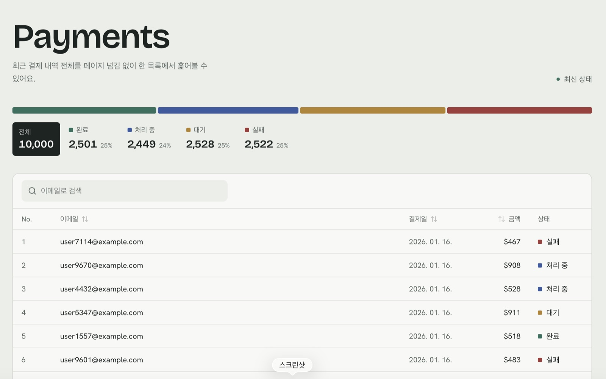
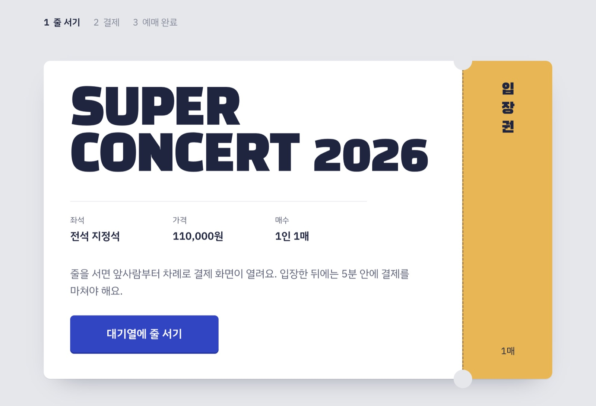
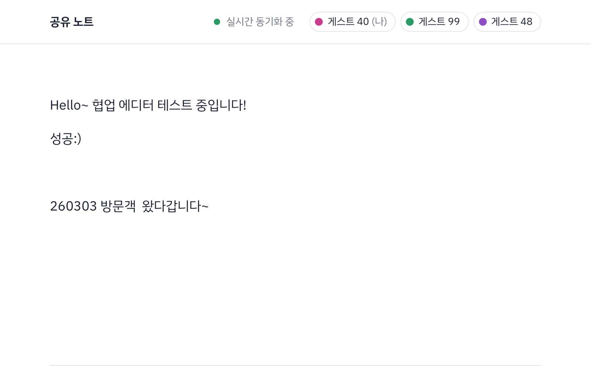
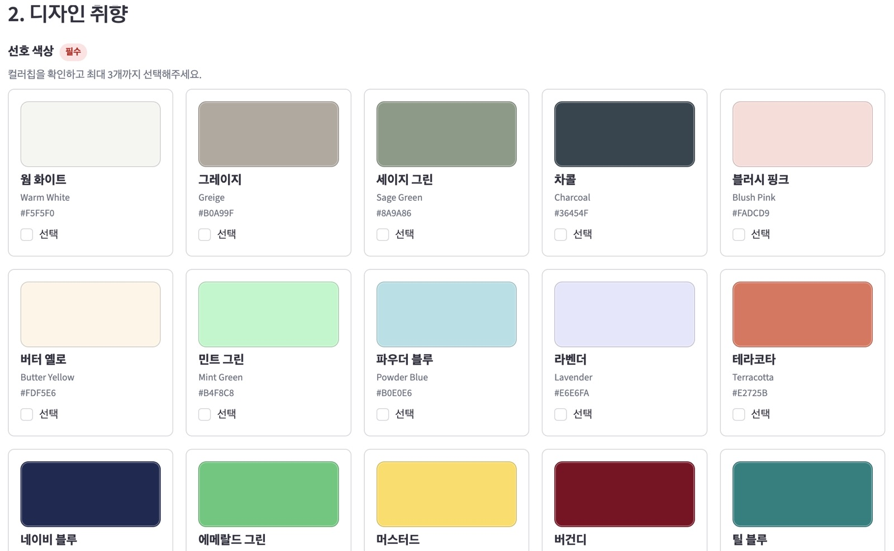

이게 될까요?
프론트엔드 개발자 임인혜입니다. “이게 될까요?”라는 질문을 받으면 되는 방법부터 찾습니다. 막히면 파고들고, 새로우면 일단 써봅니다. 이 문서에는 네 가지 질문에 어떻게 답했는지, 그 과정에서 무엇이 막혔고 어떻게 풀었는지를 담았습니다.
수만 건의 데이터를 버벅임 없이 보여줄 수 있을까요?

어떤 프로젝트인가
1만 건 규모의 결제 데이터를 다루는 어드민 대시보드입니다. 가상 스크롤로 렌더링 비용을 데이터 양과 분리하고, 필터 상태를 URL에 담아 새로고침·공유·뒤로가기에서도 같은 화면이 유지되게 만들었습니다.
데이터를 다루는 로직의 위치를 화면 코드와 나누기 위해 API 서버를 별도 저장소로 분리했습니다.
주요 기능
1만 건을 일반 <table>로 그리면 DOM 노드도 1만 개가 생겨 초기 렌더가 길어지고 스크롤 중 프레임이 끊겼습니다.
TanStack Virtual로 뷰포트에 보이는 15~20행만 렌더링하고, 전체 높이만큼 컨테이너를 잡아 스크롤바 길이를 맞췄습니다. 렌더링 비용이 데이터 양이 아니라 화면 높이에 비례하게 됐습니다.
검색어와 상태 필터를 컴포넌트 state로 들고 있어서 새로고침하면 사라지고, 공유받은 사람은 빈 화면을 봤습니다.
Nuqs로 필터 상태의 원본을 URL Query String에 두고 React state와 양방향 동기화했습니다. 상태를 두 군데 두고 맞추는 대신 URL을 단일 출처로 삼았습니다.
입력 이벤트마다 API를 호출하니 요청이 여러 개 나가고, 응답 도착 순서에 따라 결과가 깜빡였습니다.
디바운스로 입력이 멈춘 뒤에만 요청을 보내고, isFetching과 로컬 입력값을 조합해 이전 결과를 유지한 채 로딩 표시만 얹었습니다.
시딩 스크립트로 1만 건을 넣었는데 조회하면 일부만 돌아왔습니다. 적재 실패인지 조회 문제인지부터 가려야 했습니다.
Supabase의 API 응답 행 수 기본 상한에서 잘리고 있었습니다. 프로젝트의 Max Rows 설정과 쿼리의 .range()를 맞춰 해결했습니다.
배운 점
가상화는 렌더링 문제만 풉니다. ‘대용량 데이터 처리’를 하나로 봤는데, 렌더링·네트워크·파싱·메모리는 각각 다른 문제였습니다.
상태의 원본을 어디에 둘지가 UX를 결정합니다. 공유·새로고침·뒤로가기가 되느냐 마느냐를 가르는 선택이었습니다.
다음 단계
티켓이 열리는 순간 몰려드는 사람들을
순서대로 받을 수 있을까요?

어떤 프로젝트인가
티켓 예매처럼 짧은 시간에 요청이 몰리는 상황을 가정한 가상 대기열입니다. 문제를 둘로 나눠 다뤘습니다.
줄 세우기 — 들어오는 요청을 순서대로 세우고 서버가 감당할 만큼만 통과시키기. 초과 판매 막기 — 통과한 요청 사이에서도 재고 차감이 어긋나지 않게 하기.
주요 기능
재고 차감은 ‘남았는지 확인’ 다음에 ‘차감’, 명령이 두 개입니다. Redis는 명령 하나는 원자적으로 처리하지만 두 명령 사이에 다른 요청이 끼어들 수 있어, 재고 1개에 두 요청이 동시에 오면 재고가 -1이 됩니다.
활성 유저 확인·재고 확인·재고 차감을 Lua Script 하나로 묶었습니다. Redis는 스크립트를 통째로 한 명령처럼 실행해 그 사이에 끼어들 틈이 없습니다. 락은 획득·해제·만료 관리가 따로 필요해, 연산이 짧은 이 경우엔 스크립트가 더 단순했습니다.
동시 요청이 서버 처리량을 넘으면 모두가 느려집니다. 요청을 거절하면 사용자는 새로고침을 반복해 상황이 더 나빠집니다.
요청을 한꺼번에 받는 대신 대기열에 세우고, 스케줄러가 1초마다 앞쪽에서 정해진 인원만 활성 목록(Set)으로 옮깁니다. 활성 목록에 있는 유저만 결제 API를 호출할 수 있어 통과 속도를 서버가 정합니다.
순번은 서버 → 클라이언트 단방향 정보라 SSE가 어울려 보였지만, 대기 인원이 많을수록 연결을 계속 유지하는 비용이 커집니다.
순번은 초 단위 갱신이면 충분한 정보라 폴링을 택했습니다. 실제 서비스라면 대기 규모를 보고 다시 판단할 트레이드오프로 기록해 두었습니다.
배운 점
원자성은 자료구조가 아니라 연산 단위의 문제였습니다. 안전한 건 명령 하나이지 제가 짠 로직 전체가 아니었습니다.
막는 것과 줄 세우는 것은 다릅니다. 순번을 보여주고 기다리게 하면 같은 지연이라도 경험이 달라집니다.
다음 단계
여러 사람이 한 문서를 동시에 고칠 수 있을까요?

어떤 프로젝트인가
Tiptap, Yjs, Hocuspocus로 여러 사용자가 같은 문서를 동시에 편집하는 에디터입니다.
충돌 해소 방식으로 CRDT를 택했습니다. 서버가 편집 순서를 판정하지 않고 문서 상태를 중계·저장만 하므로 충돌 로직을 직접 짤 필요가 없습니다. 대신 문서를 바이너리로 다루게 되어 PostgreSQL에 bytea로 저장합니다.
주요 기능
ON CONFLICT로 INSERT·UPDATE를 하나로 처리WebSocket은 101 Switching Protocols로 정상 연결되는데, 서버의 onConnect·onLoadDocument 훅이 한 번도 불리지 않았습니다. 양쪽 모두 에러 로그가 없었고 Provider는 Connecting에 멈춰 있었습니다.
에러가 없다는 점이 단서였습니다. 핸드셰이크는 성공했으니 연결 계층(방화벽·URL·CORS)이 아니라, 연결 뒤 주고받는 메시지를 해석하지 못하는 프로토콜 계층을 의심하고 서버·클라이언트 패키지 버전을 대조했습니다.
서버 @hocuspocus/server는 v3, 클라이언트 @hocuspocus/provider는 v2였습니다. 핸드셰이크는 표준이라 통과하지만 그 위의 메시지 형식은 버전마다 달라, 서로의 메시지를 에러 없이 조용히 무시하고 있었습니다.
클라이언트 Provider를 서버와 같은 메이저 버전으로 맞추자 바로 동기화됐습니다. 이후 서버·클라이언트 SDK가 짝을 이루는 라이브러리는 버전 호환성부터 확인합니다.
Tiptap 에디터와 Hocuspocus Provider는 브라우저 API에 의존해 서버에서 실행되면 안 됩니다.
useEffect 안에서 Provider를 만들고, Provider가 준비되기 전에는 에디터를 렌더링하지 않도록 순서를 분리했습니다.
배운 점
에러가 없다는 것이 정상이라는 뜻은 아닙니다. ‘어디까지 성공했고 어디부터 아무 일도 안 일어나는가’를 나눠 보면 조용한 실패도 범위가 빠르게 좁혀졌습니다.
다음 단계
onAuthenticate에서 토큰 검증스타일과 예산만 말하면
인테리어를 제안해 줄 수 있을까요?

어떤 프로젝트인가
방 사진과 취향·예산을 받아 가구를 추천하고, 인테리어 시안 이미지와 PDF 제안서까지 만들어 주는 LangGraph 기반 멀티 에이전트 팀 프로젝트입니다.
제가 맡은 부분은 이미지 생성 에이전트입니다. 사용자의 취향 답변과 가구 추천 에이전트가 확정한 가구 목록을 받아, 원본 방 구조 위에 그 가구들을 최대한 똑같이 배치한 시안 이미지를 생성합니다.
맡은 기능
컨셉에 맞춰 미리 확정한 가구 목록을 시안에 최대한 똑같이 반영해야 했는데, 처음에는 프롬프트에 상품 URL만 텍스트로 넣었습니다. 이미지 모델은 URL을 열어보지 않아 상품 외형이 거의 반영되지 않았고, 선택되지 않은 대체 상품까지 섞여 가구 모양이 뒤섞였습니다.
실제 상품 이미지를 multimodal 참조 이미지로 함께 전달했습니다. 원본 방을 Image 1, 추천 가구를 Image 2부터 순서대로 넣고 프롬프트에서 상품 ID와 이미지 번호를 직접 연결했으며, 실루엣·색상·재질을 유지하도록 명시했습니다. 승인된 상품 이미지만 참조에 넣어 가구가 섞이지 않게 했습니다.
작은 원룸이 넓은 거실로 바뀌고, 창문·문·벽 위치와 카메라 시점이 달라졌습니다. 승인하지 않은 가구가 임의로 추가되고 이미지마다 조명도 제각각이었습니다.
원본 구조를 절대 기준으로 지정하는 Scene Lock 규칙을 만들었습니다. 카메라·건축 구조·스케일·조명은 고정하고, 승인된 가구만 쓰며 가구와 스타일만 바꿀 수 있게 프롬프트로 강제했습니다. 덕분에 Before / After 비교가 가능한, ‘내 방’으로 알아볼 수 있는 시안이 나왔습니다.
메인 시안부터 소재 보드까지 순차 생성해, 전체 시간이 각 이미지 생성 시간의 합만큼 걸렸습니다.
메인 시안을 먼저 확정한 뒤 나머지 4장을 ThreadPoolExecutor(max_workers=4)로 동시에 요청했습니다. 응답 대기가 긴 I/O 작업이라 스레드 병렬이 효과적이었고, 일부가 실패해도 성공한 결과는 그대로 씁니다.
소재 보드는 정상 생성됐는데 APIConnectionError가 남아 노드 전체가 실패 처리됐고, 다음 단계가 실행되지 않아 Manifest가 누락됐습니다.
재시도를 노드 전체가 아니라 API 호출 단위(지수 백오프)로 옮겨 이미 만든 이미지를 다시 만들지 않게 했습니다. 성공 기준도 예외 여부가 아니라 결과 파일의 존재와 크기로 바꿨습니다.
배운 점
AI에게 맡길 부분과 고정할 부분을 나눠야 결과가 쓸모 있어집니다. 자유롭게 두면 그럴듯하지만 ‘내 방’이 아닌 이미지가 나왔습니다.
성공은 예외가 아니라 결과물로 판정합니다.
다음 단계